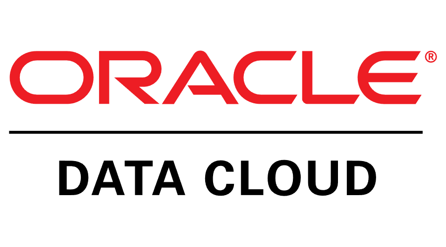
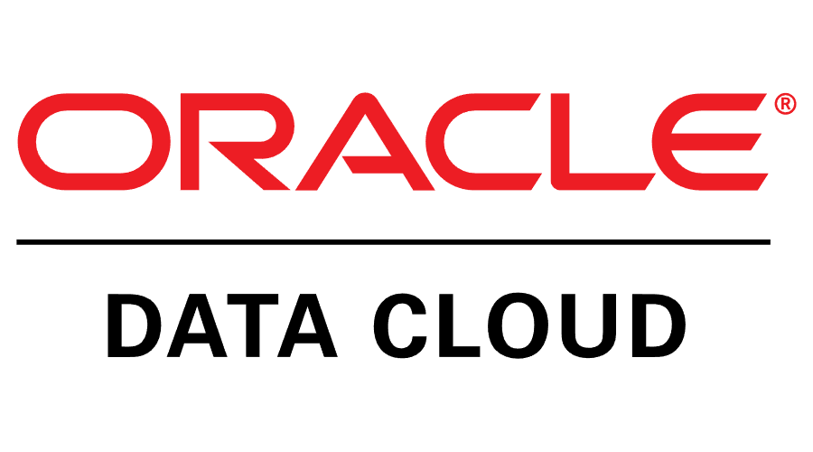

Best Moments at Gap Inc
 Hackathon Event
Hackathon Event
 Office Party
Office Party
Role Overview
At Gap Inc., I worked as an Oracle Record to Report (R2R) Software Engineer in the Finance team, where I managed complex financial data using SQL, Oracle BI Tools, and Excel Macros/VBA. I was responsible for handling client requests related to discrepancies in financial data, identifying issues, and implementing solutions to ensure the accuracy and reliability of financial reporting.
In addition to data management, I led the development of an Automated Journal Notification System. As the Product Manager, I acted as a bridge between senior developers and major stakeholders to address a $10 million journal backlog risk. I successfully executed the MVP within three months, which significantly improved the efficiency of journal approval processes and reduced operational bottlenecks.
I also worked closely with the product manager and the Kafka team to develop a microservices-based solution for Tax Code assignment related to Gap articles. This involved building a consumer and service API, which enhanced the scalability and flexibility of the system, streamlining tax code assignments across the organization.
Overall, my role at Gap Inc. involved managing large datasets, resolving data discrepancies, leading cross-functional projects, and delivering impactful solutions that optimized financial operations.Key Contributions
- Implemented a Journal Approval Notification System to mitigate a $10 million backlog risk, benefiting over 150 users.
- Developed end-to-end Business Intelligence solutions to enhance stakeholder reporting capabilities.
- Led Oracle Patch Upgrades, ensuring seamless integration with existing financial systems by coordinating with cross-functional teams.
- Designed and documented Product Requirement Documents (PRDs) for scope improvements and system upgrades in Oracle Financial Cloud.
Highlighted Projects
Sales Tax Code Application
- Optimized legacy systems for trend analysis, ensuring consistent and accurate tax code data for strategic forecasting, improving forecasting accuracy by 15% and supporting informed tax planning and decisions.
- Integrated updated tax regulations into the legacy systems, improving the efficiency of tax code updates and ensuring timely compliance with changing policies, reducing compliance issues by 20% and avoiding penalties.
- Troubleshot and resolved system errors, maintaining the stability and performance of the legacy systems, minimizing downtime and ensuring data availability, maintaining 99.9% system uptime.
- Enhanced reporting features within the system, providing real-time insights into tax-related trends, reducing reporting time by 25% and allowing the finance team to make quicker, more informed decisions.
Automated Journal Notification System
- Developed and deployed an automated notification system for journal approvals, significantly reducing manual tracking efforts and enhancing compliance, mitigating a $10 million backlog risk and accelerating approval processes by 40%.
- Integrated the notification system with JIRA and calendar tools, improving coordination among teams and ensuring no pending approvals were overlooked, streamlining communication and improving approval timelines by 30%.
- Created a real-time monitoring dashboard to track the status of journal approvals, improving visibility and enabling timely interventions, speeding up the approval process by 25%.
- Collected feedback from users and iterated on the system's design, refining the notification process to increase usability and adoption, resulting in a 50% increase in system usage and improved overall workflow efficiency.
Business Intelligence Reporting
- Designed and implemented custom business intelligence reports using Oracle BI and Tableau, improving data accessibility for finance stakeholders and reducing decision-making time by 30%, enabling faster responses to market changes.
- Collaborated with cross-functional teams to define key metrics for the BI reports, ensuring alignment with financial goals and reporting needs, increasing decision-making accuracy by 20% and providing actionable insights.
- Conducted training sessions for the finance team on how to use the new BI tools, reducing dependency on technical teams and decreasing report creation time by 40%, empowering the finance team to generate their own reports.
- Optimized existing BI dashboards to include real-time data, providing stakeholders with up-to-the-minute financial insights and improving reporting efficiency by 25%, allowing for quicker adjustments to financial strategies.
Migration of R12 to Oracle Financial Fusion Cloud
- Led the migration from Oracle R12 to Oracle Financial Fusion Cloud, streamlining financial processes and enhancing scalability, resulting in a 20% reduction in operational costs over the following year due to improved system efficiency.
- Managed testing and validation efforts to ensure successful migration of financial data, maintaining accuracy and integrity during the transition, ensuring zero data loss and facilitating a seamless business transition.
- Worked closely with IT and cross-functional teams to integrate Oracle Financial Fusion Cloud with other business systems, improving data flow and minimizing errors, reducing system issues by 15% and ensuring smoother financial reporting.
- Provided ongoing optimization and support after migration, continually improving system performance to meet evolving business needs, resulting in a 30% increase in operational efficiency across financial departments.
DevOps - Batch Scheduler Monitoring
- Designed and implemented batch scheduler monitoring using CA Workload Automation, significantly improving job tracking and reducing failure rates, leading to a 20% reduction in batch job failures and ensuring better system reliability.
- Configured CA Workload to automate job dependencies, optimizing the scheduling process and ensuring jobs ran in the correct order, improving resource utilization and reducing processing time by 15%.
- Developed a real-time dashboard to provide visibility into batch job statuses, enabling quick identification of issues and faster resolution, reducing troubleshooting time by 25% and ensuring smoother batch operations.
- Iterated on the monitoring system based on feedback, improving alerting and reporting features, boosting system adoption by 40% and improving team responsiveness to potential issues.
Oracle Patch Implementation (ERP Upgrade)
- Coordinated the implementation of Oracle patches for ERP upgrades, ensuring system stability and reducing vulnerabilities, minimizing downtime by 15% and avoiding security risks.
- Led testing and validation of patches in staging environments to ensure compatibility with existing business processes, ensuring a smooth upgrade process with no disruptions to ongoing operations.
- Collaborated with the IT and business teams to prioritize patch deployments based on criticality, reducing patching time by 20% and enhancing the ERP system’s performance and security.
- Created and maintained detailed documentation on patch implementation procedures, enabling faster future upgrades and improving team efficiency by 30% in handling subsequent ERP patch cycles.
Skills
Technical
 Python
Python
 Java
Java
 C++
C++
 SQL
SQL
 Spring Boot
Spring Boot
Python
Java
C++
SQL
Spring Boot
Data Analysis
 Power BI

Oracle BI
Power BI

Oracle BI
 Microsoft Excel
Microsoft Excel
Power BI
Microsoft Excel
Documentation
 Confluence
Confluence
 Microsoft Word
Microsoft Word
 Visio
Visio
 PowerPoint
PowerPoint
Confluence
Microsoft Word
Visio
PowerPoint
Tools
 Microsoft Azure
Oracle Cloud
Microsoft Azure
Oracle Cloud
 Jenkins
Jenkins
 Jira
Jira
Microsoft Azure
Jenkins
Jira